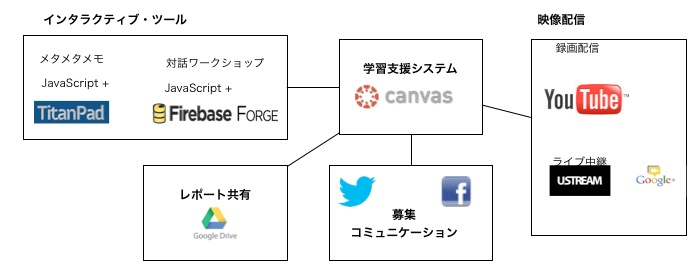

「クリエイティブな学びをみんなで学ぶ」はインターネット上で無料で利用できるサービスと、 一部開発したツールを利用して運営されました。
ここでは利用したサービスを紹介します。

LMS(学習支援システム)
-
CanvasはInstructure社が開発したオープン・ソースのLMSです。 CanvasはLMSとして必要な機能はすべてそろっていて、インターフェースもわかりやすく、 外部システムとの連携も充実しています。
今回は3ヶ月間の運用になるため、システム運用リスクを減らすために、デモ版のCanvasを利用しました。 デモ版といってもCanvasの機能はすべて利用可能です。 今回はInstructure社に問いあわせて日本語のMOOCに利用することをが可能なことを確認した上でコースを構築しました。
映像
-
Ustreamは映像中継用のサービスです。
-
Google Hangoutは10ヶ所までの拠点を結んだオンライン・カンファレンスが可能です。 終了後にはYouTubeに即アップロードが可能です。
-
YouTubeを説明する必要はないでしょう。
募集、コミュニケーション
LCLJは実験的要素が強いので、FacebookとTwitterのみで募集をおこない、 ユーザーとのコミュニケーションもこれらでおこないました。 人的資源がない場合は、FBかTwitterかどちらかにしぼった方がよかったかもしれません。
レポート共有
-
提出されたレポートは、氏名などを削除した上で、Google Driveにアップロードしました。
インタラクティブ・ツール
ユニット2、ユニット3で使用したインタラクティブ・ツールはLCLJのために開発しました。
-
メタメタメモ
メタメタメモは、資料をみながら、チャットをおこない、コンテンツをつくる流れを実現しています。
共同コンテンツ編集は、TitanPadを使用しました。
-
対話ワークショップ
対話ワークショップでは、参加者が2人ずつに分かれてチャットをおこないます。 リアルタイムに対話が可能なよう、フロントはHTMLとJavascript、バックエンドにはFirebaseを用いました。 昨年6月はFirebaseはベータ期間で無料で利用することができました。
ユーザー分析
-
Google Analytics
参加者募集のページなどにGoogle Analyticsのコードを埋め込みました。 今回はデモ版Canvasを利用したこともあり、分析は限定的なものに留まりました。
-
Canvas
CanvasにもAnalytics機能があります。LMS上のアクティビティが多い場合は有効でしょう。
-
YouTube
YouTubeにも視聴の分析機能があります。